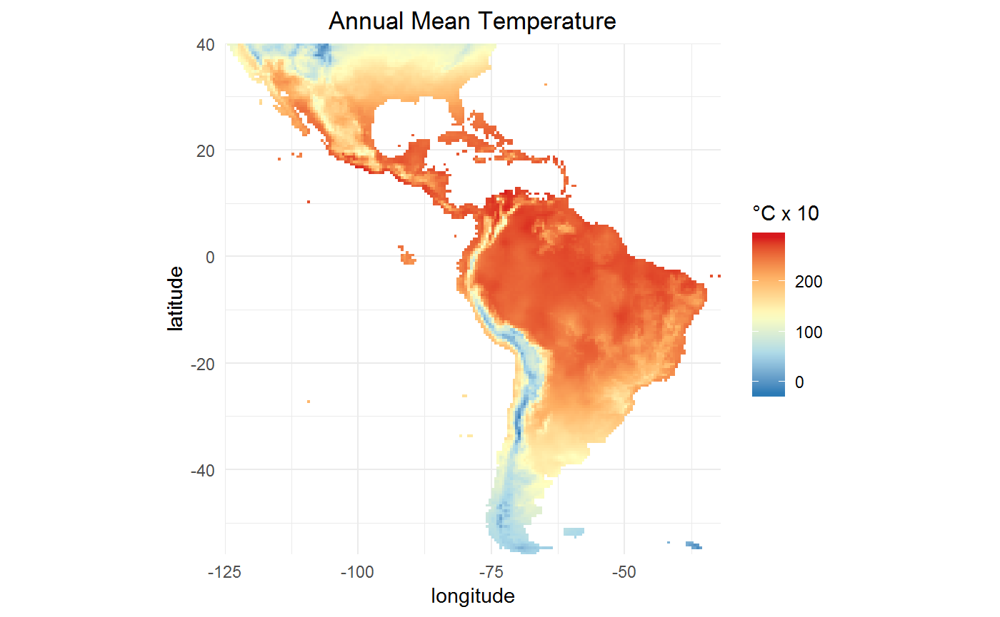
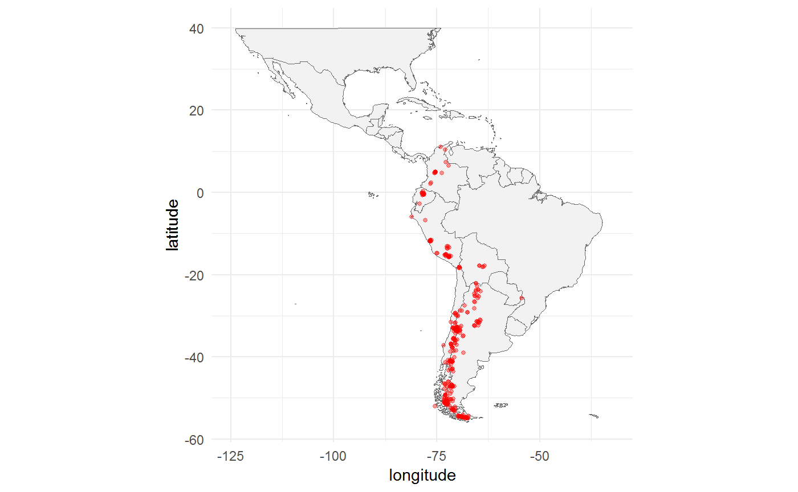
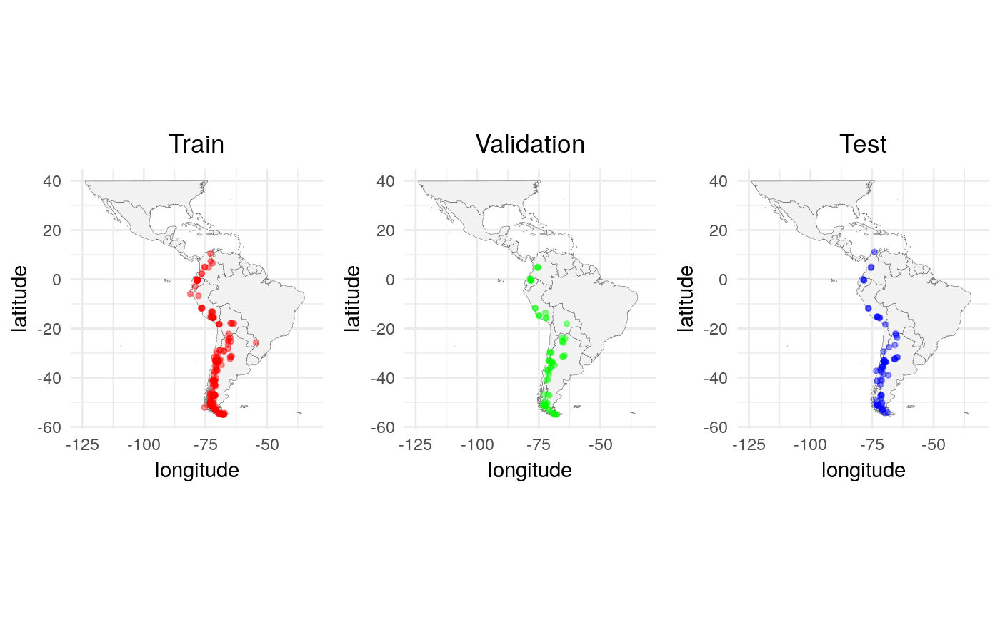
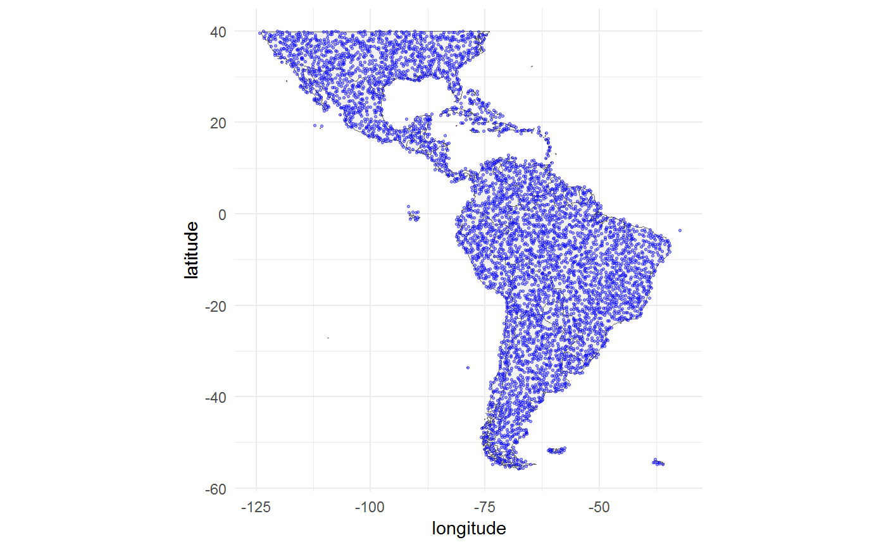
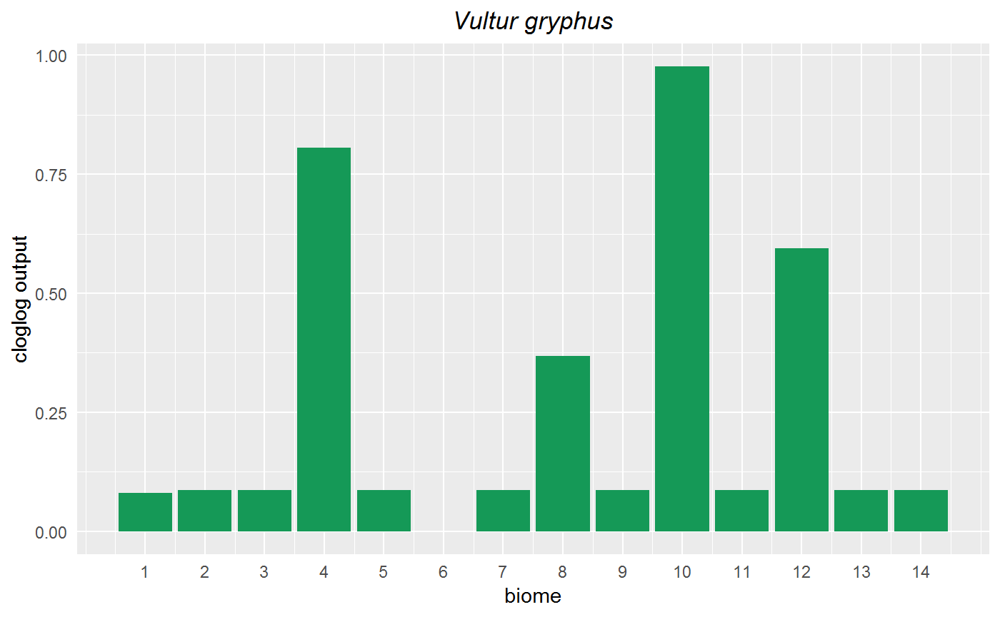
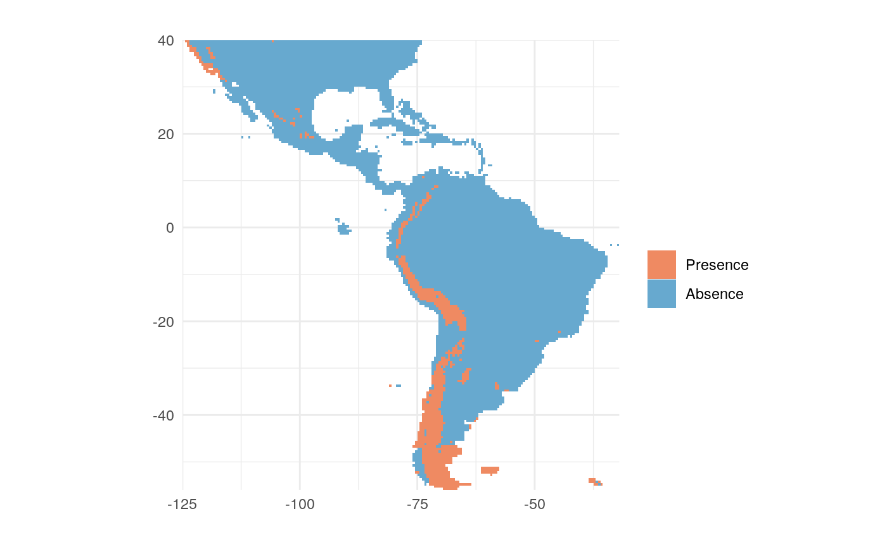
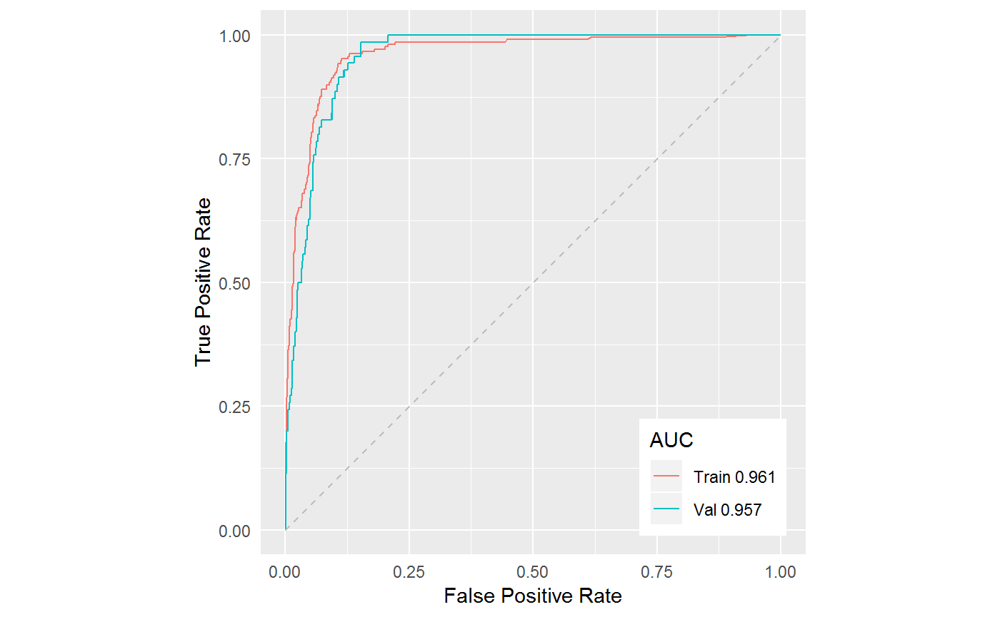
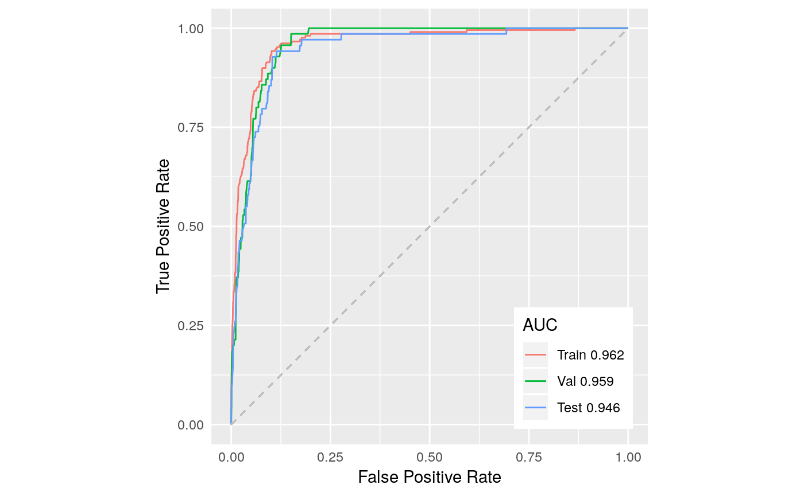

Tune model using AUC
Sergio Vignali, Arnaud Barras, Veronika Braunisch
Source:vignettes/articles/tune_auc.Rmd
tune_auc.RmdSet working environment
Import SDMsel:
options(java.parameters = "-Xmx2g" )
library(SDMsel)
#> Loading required package: zeallot
#> Loading required package: ggplot2
#> ________________________________________
#> | ____ ____ __ __ _ |
#> | / ___| | _ \ | \/ | ___ ___ | | |
#> | \___ \ | | | || |\/| |/ __| / _ \| | |
#> | ___) || |_| || | | |\__ \| __/| | |
#> | |____/ |____/ |_| |_||___/ \___||_| |
#> |________________________________________|
#> Load packages used in the vignette:
library(dismo) # To download data used in the vignette
library(plotly) # For interactive graphs
library(maps) # For access useful maps
library(rasterVis) # To plot raster objects
library(gridExtra) # To plot multiple ggplot object in one pageAcquire environmental variables and species distribution data
For the analysis we will use the climat data from WorldClim version 1.4 (Hijmans et al. 2005) (you can download the new version 2.0 from the previous link) and the ecoregions from WWF (Olson et al. 2001) included in the dismo package:
files <- list.files(path = paste(system.file(package = 'dismo'), '/ex', sep = ''), pattern = 'grd', full.names = T)
predictors <- stack(files)Plot bio1 using gplot function from rasterVis package:
gplot(predictors$bio1) +
geom_tile(aes(fill = value)) +
coord_equal() +
scale_fill_gradientn(colours = c("#2c7bb6", "#abd9e9", "#ffffbf", "#fdae61", "#d7191c"),
na.value = "transparent",
name = '°C x 10') +
labs(title = 'Annual Mean Temperature',
x = 'longitude',
y = 'latitude') +
scale_x_continuous(expand = c(0, 0)) +
scale_y_continuous(expand = c(0, 0)) +
theme_minimal() +
theme(plot.title = element_text(hjust = 0.5),
axis.ticks.x = element_blank(),
axis.ticks.y = element_blank())
There are nine environmental variables:
- Continuous variables
- bio1 Annual Mean Temperature
- bio5 Max Temperature of Warmest Month
- bio6 Min Temperature of Coldest Month
- bio7 Temperature Annual Range (bio5-bio6)
- bio8 Mean Temperature of Wettest Quarter
- bio12 Annual Precipitation
- bio16 Precipitation of Wettest Quarter
- bio17 Precipitation of Driest Quarter
- Categorical variables
- biome Terrestrial Ecoregions of the World
For demostrating how to use SDMsel we download a dataset of Vultur gryphus from the Global Biodiversity Inventory Facility GBIF using the gbif function of dismo package. We download data from the last 3 years.
data <- gbif(genus = 'Vultur', species = 'gryphus*', geo = TRUE, removeZeros = TRUE, args = 'year=2015,2017')
#> 4217 records found
#> 0-300-600-900-1200-1500-1800-2100-2400-2700-3000-3300-3600-3900-4200-4217 records downloaded
data <- data.frame(x = data$lon, y = data$lat)
cleaned_data <- data[!duplicated(data), ] # Remove duplicate rows
cleaned_data <- cleaned_data[!is.na(cleaned_data$x) | !is.na(cleaned_data$y), ] # Remove NA valuesWe remove all but one location per raster cell using the function thinData:
cleaned_data <- thinData(cleaned_data, predictors)cat('Number of observations before cleaning data:', nrow(data),
'\nNumber of obsevations after cleaning data :', nrow(cleaned_data))
#> Number of observations before cleaning data: 4217
#> Number of obsevations after cleaning data : 348We downloaded 4217 presence locations and after removing the duplicates, the NA and all but one location per raster cell we have 348 locations for our analysis. We can plot the study area and the cleaned locations:
ggplot(map_data('world'), aes(long, lat)) +
geom_polygon(aes(group = group), fill = "grey95", color = "gray40", size = 0.2) +
geom_jitter(data = cleaned_data, aes(x = x, y = y), color = 'red',
alpha = 0.4, size = 1) +
labs(x = "longitude", y = "latitude") +
theme_minimal() +
theme(legend.position = "none") +
coord_fixed() +
scale_x_continuous(limits = c(-125, -32)) +
scale_y_continuous(limits = c(-56, 40))
In this tutorial we don’t check the validity of the locations, instead we assume they are correct and we model the distribution only for demonstration purpose.
Model Selection
MaxEnt is a Machine Learning (ML) approach for Species Distribution Models and most of the ML methods require to define several hyperparameters before training the model. Hyperparameters are parameters whose values are set before the learning process begins and are not estimated from the data. Their best value is unknown for a given model but can be assessd using a tuning precedure. During the tuning procedure several models are trained varying the value of a hyperparameters and the model with the best performance is retained. The performance of a model can be evaluated using various metrics, SDMsel provides three: AUC, TSS (True Skill Statistic) and AICc.
Prepare data for Model Selection
In this vignette we demonstrate how to perform model selction using the AUC. In ML part of the data are withheld for testing purpose. A model is trained using the majority of the data and then evaluated using the withheld dataset. During hyperparameter tuning this process is repeated several times and the hyperparameters are tuned to improve the prediction on the test dataset. At the end of the model selection process the test dataset doesn’t represent anymore an indipendet sample and then is a good practice to split the data randomly in three parts: Train, Validation and Test datasets (Russell and Norvig 2009). The Train dataset is used to train the model, the Validation dataset to estimate the model performance while tuning the hyperparameters and the Test dataset is used at the end of the tuning process to have an unbiased evaluation of the final model. For a good overview of the topic visit the Jason Brownlee’s thread.
We create a random train/val/test datasets withholding a 20% sample for validation and a 20% for testing. We set the seed to obtain consistent results between different trails:
# The %<-% operator from "zeallot"" package unpacks a list in variables
c(train_coords, val_coords, test_coords) %<-% trainValTest(cleaned_data, val = 0.2, test = 0.2, seed = 2530)
cat('Total presence locations :', nrow(cleaned_data),
'\nTotal train locations :', nrow(train_coords),
'\nTotal validation locations:', nrow(val_coords),
'\nTotal test locations :', nrow(test_coords))
#> Total presence locations : 348
#> Total train locations : 209
#> Total validation locations: 70
#> Total test locations : 69Plot Train, Validation and Test datasets:
base_plot <- ggplot(map_data('world'), aes(long, lat)) +
geom_polygon(aes(group = group), fill = "grey95", color = "gray40", size = 0.1) +
labs(x = "longitude", y = "latitude") +
theme_minimal() +
theme(legend.position = "none") +
coord_fixed() +
scale_x_continuous(limits = c(-125, -32)) +
scale_y_continuous(limits = c(-56, 40)) +
theme(plot.title = element_text(hjust = 0.5))
train_plot <- base_plot + geom_jitter(data = train_coords, aes(x = x, y = y), color = 'red', alpha = 0.4, size = 1) + labs(title = 'Train')
val_plot <- base_plot + geom_jitter(data = val_coords, aes(x = x, y = y), color = 'green', alpha = 0.4, size = 1) + labs(title = 'Validation')
test_plot <- base_plot + geom_jitter(data = test_coords, aes(x = x, y = y), color = 'blue', alpha = 0.4, size = 1) + labs(title = 'Test')
grid.arrange(train_plot, val_plot, test_plot, nrow = 1)
To extract the background locations we use the randomPoints function from dismo package.
set.seed(25)
bg_coords <- randomPoints(predictors, 10000)
#> Warning in randomPoints(predictors, 10000): generated random points =
#> 0.9775 times requested numberThe environmental variables we downloaded have a coarse resolution and the function cannot extract more than 9775 as you can see from the warning message.
Before running the model we have to prepare the data in the correct format. The prepareSWD function creates a SWD object that stores the species name, the coordinates of the locations and the value of the environmental variables at location points. The parameter categoricals indicates which environmental variables are categorical. In our example biome is categorical (you can pass a vector if you have more than one categorical environmental variables). The function extracts the value of the environmental variables for each location and excludes those locations that have NA value for at least one environmental variable.
train <- prepareSWD(species = "Vultur gryphus", coords = train_coords, env = predictors, categoricals = "biome")
#> Extracting environmental condition for Vultur gryphus...
val <- prepareSWD(species = "Vultur gryphus", coords = val_coords, env = predictors, categoricals = "biome")
#> Extracting environmental condition for Vultur gryphus...
test <- prepareSWD(species = "Vultur gryphus", coords = test_coords, env = predictors, categoricals = "biome")
#> Extracting environmental condition for Vultur gryphus...
bg <- prepareSWD(species = "Vultur gryphus", coords = bg_coords, env = predictors, categoricals = "biome")
#> Extracting environmental condition for Vultur gryphus...
#> Warning: 9 locations are NA for some environmental variables, they will be discard!The warning message reports that in the background dataset there are 9 locations that are discarded.
Let’s have a look at the SWD object:
train
#> Class : SWD
#> Species : Vultur gryphus
#> Locations : 209
#> Continuous variables : bio1 bio12 bio16 bio17 bio5 bio6 bio7 bio8
#> Categorical variables: biomeThere are three slots: species, coords and data. To see the data we run:
head(train@data)
#> bio1 bio12 bio16 bio17 bio5 bio6 bio7 bio8 biome
#> 1 136 382 242 7 281 22 259 87 12
#> 2 68 1346 580 160 197 -25 223 20 4
#> 3 37 616 175 123 119 -33 151 37 4
#> 4 193 662 388 11 310 43 267 233 2
#> 5 40 529 151 104 124 -31 155 40 4
#> 6 54 521 169 87 156 -36 192 25 4or access the coordinates with train@coords or the species with train@species.
head(train@coords)
#> X Y
#> 326 -70.99844 -33.00903
#> 296 -71.53533 -41.96383
#> 167 -68.09218 -54.71619
#> 292 -64.72847 -25.27307
#> 335 -67.59044 -54.93793
#> 157 -72.48363 -47.11655We can save the SWD object in a .csv file to use it directly in the software MaxEnt:
swd2csv(train, file_name = "train.csv")We use a sub sample of the background locations to train the model and the full dataset to compute the correlation between the environmental variables. We extract the sub sample using the getSubsample function:
bg_model <- getSubsample(bg, 5000, seed = 25)and plot the retained background locations:
ggplot(map_data('world'), aes(long, lat)) +
geom_polygon(aes(group = group), fill = "grey95", color = "gray40", size = 0.2) +
geom_jitter(data = bg_model@coords, aes(x = X, y = Y),
color = 'blue', alpha = 0.4, size = 0.5) +
labs(x = "longitude", y = "latitude") +
theme_minimal() +
theme(legend.position = "none") +
coord_fixed() +
scale_x_continuous(limits = c(-125, -32)) +
scale_y_continuous(limits = c(-56, 40))
Train MaxEnt models
The trainMaxent function helps training MaxEnt models in R and gives the possibility to set several arguments. By default the function saves the MaxEnt output files in a temporary folder that is sistematically deleted at the end of the script but we can use the parameter folder to specify where to permanently save the output. The next line of code is an example of how to use the function to train a model (note that rm = 1, fc = "lqph" and type = "cloglog" are the default settings of MaxEnt software v. 1.4.1 when you have at least 80 presence locations):
base_model <- trainMaxent(presence = train, bg = bg_model, rm = 1, fc = "lqph", type = "cloglog", test = val, iter = 500, folder = "base_model")#> Loading required namespace: rJavaThe main arguments have a dedicated parameter in the function, for all the others we can use the extra_args parameter and pass a vector with the options (e.g. extra_args = c("responsecurves=true", "writeplotdata=true") to plot the response curves in the html file). The function takes care of the environmental variables data type: when we prepared the data we defined biome as categorical variable and the information is passed to the trainMaxent function.
The result of the trainMaxent function is an object of class Maxent that stores in different slots the presence (or Train) and background locations and, if provided, the test dataset; MaxEnt results, lambdas coefficients, rm, fc, iterations, output type and the folder where is stored the MaxEnt output if provided. We can access this values using model@name_of_the_slot, like model@rm or model@fc. When we call the model object R prints all the parameters we used to train the model and open the html file in the browser (only if we save the results permanetly using the parameter folder = my_path).
base_model
#> Class : Maxent
#> Species : Vultur gryphus
#> RM : 1
#> FCs : lqph
#> Iterations : 500
#> Output type : cloglog
#> Presence data : 209
#> Background data : 5000
#> Test data : 70
#> Continuous variables : bio1 bio12 bio16 bio17 bio5 bio6 bio7 bio8
#> Categorical variables: biomeVariable Importance
We can see the percent contribution and the permutation importance of each environmental variable using varImp:
varImp(base_model)
#> Variable Permutation_importance Percent_contribution
#> 1 bio1 63.4 24.6
#> 2 bio7 16.6 5.8
#> 3 bio6 5.0 0.5
#> 4 bio5 4.8 32.5
#> 5 bio17 3.7 3.5
#> 6 biome 2.4 3.3
#> 7 bio8 1.8 22.2
#> 8 bio12 1.7 6.1
#> 9 bio16 0.6 1.5Or plot it using the plotVarImp function (the default color is grey):
plotVarImp(base_model, type = "perm", color = "#159957")
Another way to estimate the variable importance is to run a Jackknife Test:
jk <- doJk(base_model, with_only = T, metric = "auc")If the model has a test dataset, it returns the train and test AUC, if not it returns only the train AUC
jk
#> Variable Train_AUC_without Train_AUC_withonly Test_AUC_without
#> 1 bio1 0.9677 0.9247 0.9662
#> 2 bio12 0.9686 0.7742 0.9667
#> 3 bio16 0.9693 0.7591 0.9672
#> 4 bio17 0.9679 0.6078 0.9672
#> 5 bio5 0.9665 0.9393 0.9649
#> 6 bio6 0.9673 0.8584 0.9647
#> 7 bio7 0.9678 0.7610 0.9637
#> 8 bio8 0.9680 0.9223 0.9663
#> 9 biome 0.9670 0.8423 0.9647
#> Test_AUC_withonly
#> 1 0.9120
#> 2 0.7664
#> 3 0.7582
#> 4 0.5832
#> 5 0.9324
#> 6 0.8597
#> 7 0.7148
#> 8 0.9071
#> 9 0.7928We can plot the result of the Jackknife Test with the plotJk function:

The red dashed vertical line represents the AUC value of the model trained using all the environmental variables.
Plot Response Curves
The function plotResponse plots the response curve of the given environmental variable:
plotResponse(base_model, variable = 'bio1', marginal = T, fun = mean, rug = T, clamp = T)
bio1 is a continuous variable, biome is categorical (in the next graph we plot the univariate response curve):
plotResponse(base_model, variable = 'biome', marginal = F, color = '#159957', clamp = T)
color allows to change the color of the plot and marginal to plot the marginal response curve.
Plot ROC curve
The plotROC function plots the ROC curve and display the value of the AUC. Is possible to plot only the Train ROC curve or the Train together with the validation and/or the test one:
plotROC(base_model, val = val)
Make Prediction
The function trainMaxent trains a model but doesn’t make any prediction. The predict method makes the prediction:
prediction <- predict(base_model, data = predictors, filename = "base_model_prediction", format = "GTiff", overwrite = T)You can pass as data a data frame, a SWD object or a Raster Stack, Raster Brick object. In the first case the function returns a vector of prediction, in the second case it returns a raster map that can be saved providing the filename parameter. For big dataset you can provide the parameter progress = "text" to display a progress bar and take advantage of the parallel computation using parallel = T.
Plot Prediction
The prediction can be plotted using any of the plot function in R but the function plotPred provides a way to plot it using the rasterVis package (lt stands for “legend title”):
plotPred(prediction, lt = "cloglog output")
The default colorramp is similar to the usual MaxEnt output, but you can also use different colorramps:
plotPred(prediction, colorramp = c("#2c7bb6", "#abd9e9", "#ffffbf", "#fdae61", "#d7191c"), lt = "cloglog output")
To get nice combinations of colors for maps visit COLORBREWER, the one in this example is the 5-class RdYlBu colorblind safe and print friendly. Using hr = T you obtain a high resolution plot, useful for publications.
Plot Presence Absence
To create a presence absence map we choose a threshold provided by MaxEnt. The function maxentTh provides a list of possible thresholds:
maxentTh(base_model)
#> threshold
#> Fixed.cumulative.value.1.Cloglog 6.500e-03
#> Fixed.cumulative.value.5.Cloglog 4.970e-02
#> Fixed.cumulative.value.10.Cloglog 1.242e-01
#> Minimum.training.presence.Cloglog 6.000e-04
#> X10.percentile.training.presence.Cloglog 1.859e-01
#> Equal.training.sensitivity.and.specificity.Cloglog 1.762e-01
#> Maximum.training.sensitivity.plus.specificity.Cloglog 1.167e-01
#> Equal.test.sensitivity.and.specificity.Cloglog 1.187e-01
#> Maximum.test.sensitivity.plus.specificity.Cloglog 1.107e-01
#> Balance.training.omission..predicted.area.and.value.Cloglog 2.300e-02
#> Balance.training.omission..predicted.area.and.value.area 1.976e-01
#> Balance.training.omission..predicted.area.and.value.training.omission 1.440e-02
#> Balance.training.omission..predicted.area.and.value.test.omission 0.000e+00
#> Balance.training.omission..predicted.area.and.value.binomial.probability 4.449e-64
#> Equate.entropy.ofed.and.original.distributions.Cloglog 1.559e-01
#> Equate.entropy.ofed.and.original.distributions.area 8.460e-02
#> Equate.entropy.ofed.and.original.distributions.training.omission 7.660e-02
#> Equate.entropy.ofed.and.original.distributions.test.omission 1.143e-01
#> Equate.entropy.ofed.and.original.distributions.binomial.probability 0.000e+00For example we use the Maximum training sensitivity plus specificity Cloglog threshold as parameter for the plotPA function:
plotPA(prediction, th = 0.0476, filename = 'pa_map', overwrite = TRUE, format = 'GTiff')
or we can customise the colors using:
plotPA(prediction, th = 0.0476, colors = c("#7fbf7b", "#af8dc3"))
Data Driven Variable Selection
Some of the environmental variables used to train our base_model are highly correlated. There are two functions that help to visualize if the environmental variables are highly correlated: plotCor and corVar. plotCor builds a correlation matrix heat map (we use all the extracted background points to checks for autocorrelation):
plotCor(bg, method = "spearman", cor_th = 0.75)
Using the parameter cor_th the function prints only the values whose absolute values are higher than the given threshold (in this case 0.75). corVar instead creates a data frame with the correlated variables:
corVar(bg, method = "spearman", cor_th = 0.75)
#> Var1 Var2 value
#> 1 bio1 bio6 0.9513541
#> 2 bio12 bio16 0.9447559
#> 3 bio6 bio7 -0.8734498
#> 4 bio1 bio8 0.8459649One possible approach to remove highly correlated variables is to choose a subset of variables based on expert knowledge of the target species. If you don’t know which variable to retain, you can use some kind of data-driven variable selection. The function varSel iterates through several steps: starting from a trained model it checks if the variable ranked as most important (both variable importance ranks are possible: percent contribution and permutation importance) is highly correlated with other variables according to the given method and correlation threshold. In this case it performs a Jaccknife test and among the correlated variables it discards the one that decreases the less the model performance. After it trains another model without the removed variable and checks again for highly correlated variables. The process is repeated until the retained variables are not highly correlated anymore. We suggest to use a very low regularization parameter to perform variable selection, in this case we use 0.001 (see Vignali et al. we add here the publication)
selected_var_model <- varSel(base_model, bg, metric = "auc", rm = 0.001, method = "spearman", cor_th = 0.75)The function returns the model trained without the correlated variables, if we print the object we see that the function removed bio6, bio7, bio8 and bio16:
selected_var_model
#> Class : Maxent
#> Species : Vultur gryphus
#> RM : 1
#> FCs : lqph
#> Iterations : 500
#> Output type : cloglog
#> Presence data : 209
#> Background data : 5000
#> Test data : 70
#> Continuous variables : bio1 bio12 bio17 bio5
#> Categorical variables: biomeIf we plot the ROC curve we see that after removing the correlated variables the model has still very good performances:
plotROC(selected_var_model, val = val)
Tune model hyperparameters
SDMsel provides a family of functions to tune model hyperparameters. For Maxent models we can tune the feature combination, the number of background locations, the regularization multiplier and the number of iterations. All the functions of this family return an object of class SDMtune with two slots, one for the results and one with all the trained models.
Tune feature combination
We can test the effect of different feature combinations on model performance using the function tuneFC:
tune_fc <- tuneFC(selected_var_model, fcs = c("l", "lq", "lqp", "lqh", "lqph", "lqpht"), metric = "auc")We can display the results with:
tune_fc@results
#> it bg rm fc train_AUC test_AUC diff_AUC
#> 1 500 5000 1 l 0.9433 0.9411 0.0022
#> 2 500 5000 1 lq 0.9503 0.9458 0.0045
#> 3 500 5000 1 lqp 0.9503 0.9458 0.0045
#> 4 500 5000 1 lqh 0.9600 0.9544 0.0056
#> 5 500 5000 1 lqph 0.9612 0.9569 0.0043
#> 6 500 5000 1 lqpht 0.9707 0.9614 0.0093or plot them:
plot_ly(tune_fc@results) %>%
add_trace(x = ~fc, y = ~train_AUC, type = "bar", name = "Train AUC", marker = list(color = "#00BFC4"), text = ~paste("Diff AUC:", diff_AUC)) %>%
add_trace(x = ~fc, y = ~test_AUC, type = "bar", name = "Val AUC", marker = list(color = "#F8766D")) %>%
layout(xaxis = list(title = "Feature Class Combination"), yaxis = list(title = "AUC"), barmode = "group", title = "Model performance", legend = list(orientation = 'h'))We want to maximize the AUC in the validation dataset but we want to acccount also for the difference between train AUC and validation AUC. If you hover hover the previous output and you select “compare data on hover” you notice that lqph provides the best result, we select this model from the models slot and use it to tune the number of background locations.
tuned_fc <- tune_fc@models[[5]]Tune number of background locations
The model we trained before used 5000 background locations. To test the effect of using different number of background locations on the model performance we can run the function tuneBg. We have a maximum of 9766 locations in the bg object, in the next example we train a sequence of models using 3000, 4000, 5000, 6000, 7000, 8000, 9000, 9766:
tune_bg <- tuneBg(tuned_fc, bg4test = bg, bgs = c(seq(1000, 9000, 1000), nrow(bg@data)), metric = "auc", seed = 25)Output:
tune_bg@results
#> it bg rm fc train_AUC test_AUC diff_AUC
#> 1 500 1000 1 lqph 0.9567 0.9542 0.0025
#> 2 500 2000 1 lqph 0.9568 0.9446 0.0122
#> 3 500 3000 1 lqph 0.9612 0.9514 0.0098
#> 4 500 4000 1 lqph 0.9612 0.9569 0.0043
#> 5 500 5000 1 lqph 0.9612 0.9569 0.0043
#> 6 500 6000 1 lqph 0.9608 0.9569 0.0039
#> 7 500 7000 1 lqph 0.9603 0.9566 0.0037
#> 8 500 8000 1 lqph 0.9611 0.9575 0.0036
#> 9 500 9000 1 lqph 0.9607 0.9574 0.0033
#> 10 500 9766 1 lqph 0.9612 0.9580 0.0032plot_ly(tune_bg@results) %>%
add_trace(x = ~bg, y = ~train_AUC, type = "scatter", mode = "lines+markers", name = "Train AUC", marker = list(color = "#00BFC4")) %>%
add_trace(x = ~bg, y = ~test_AUC, type = "scatter", mode = "lines+markers", name = "Val AUC", marker = list(color = "#F8766D")) %>%
layout(xaxis = list(title = "Background locations"), yaxis = list(title = "AUC"), title = "Model performance", legend = list(orientation = 'h'))We obtain the best result using all the background locations, we select this model from the models slot and use it to tune the regularization multiplier.
tuned_bg <- tune_bg@models[[10]]Tune Regularization Multiplier
In the next step we tune the regularization multiplier. The default regularization multiplier used by MaxEnt is 1, but is not always the best choice. In the next example we test a sequence of regularization multipliers starting from 0.1 till 2.0 with increments of 0.1:
tune_rm <- tuneRM(tuned_bg, rms = seq(0.1, 2, 0.1), metric = "auc")Output:
tune_rm@results
#> it bg rm fc train_AUC test_AUC diff_AUC
#> 1 500 9766 0.1 lqph 0.9702 0.9546 0.0156
#> 2 500 9766 0.2 lqph 0.9685 0.9555 0.0130
#> 3 500 9766 0.3 lqph 0.9669 0.9570 0.0099
#> 4 500 9766 0.4 lqph 0.9659 0.9578 0.0081
#> 5 500 9766 0.5 lqph 0.9655 0.9587 0.0068
#> 6 500 9766 0.6 lqph 0.9646 0.9587 0.0059
#> 7 500 9766 0.7 lqph 0.9636 0.9581 0.0055
#> 8 500 9766 0.8 lqph 0.9630 0.9586 0.0044
#> 9 500 9766 0.9 lqph 0.9620 0.9585 0.0035
#> 10 500 9766 1.0 lqph 0.9612 0.9580 0.0032
#> 11 500 9766 1.1 lqph 0.9604 0.9573 0.0031
#> 12 500 9766 1.2 lqph 0.9599 0.9570 0.0029
#> 13 500 9766 1.3 lqph 0.9595 0.9568 0.0027
#> 14 500 9766 1.4 lqph 0.9591 0.9565 0.0026
#> 15 500 9766 1.5 lqph 0.9587 0.9560 0.0027
#> 16 500 9766 1.6 lqph 0.9583 0.9560 0.0023
#> 17 500 9766 1.7 lqph 0.9577 0.9554 0.0023
#> 18 500 9766 1.8 lqph 0.9572 0.9549 0.0023
#> 19 500 9766 1.9 lqph 0.9571 0.9548 0.0023
#> 20 500 9766 2.0 lqph 0.9567 0.9545 0.0022plot_ly(tune_rm@results) %>%
add_trace(x = ~rm, y = ~train_AUC, type = "scatter", mode = "lines+markers", name = "Train AUC", marker = list(color = "#00BFC4")) %>%
add_trace(x = ~rm, y = ~test_AUC, type = "scatter", mode = "lines+markers", name = "Val AUC", marker = list(color = "#F8766D")) %>%
layout(xaxis = list(title = "Regularization multiplier"), yaxis = list(title = "AUC"), title = "Model performance", legend = list(orientation = 'h'))The model with the highest validation AUC uses a regularization multiplier equal to 0.5 but at rm = 0.9 we have a lower differece between train and validation AUC with an irrelevant decrease of validation AUC, we select this model from the models slot and use it to tune the number of iterations.
tuned_rm <- tune_rm@models[[9]]Tune number of iterations:
The default number of iterations used by the optimization algorithm in MaxEnt is 500. This value is in general good but can be tuned like other hyperparameters. We test a sequence iterations starting from 400 till 2300 with increments of 100:
tune_it <- tuneIt(tuned_rm, its = seq(400, 1100, 50), metric = "auc")Output:
tune_it@results
#> it bg rm fc train_AUC test_AUC diff_AUC
#> 1 400 9766 0.9 lqph 0.9620 0.9579 0.0041
#> 2 450 9766 0.9 lqph 0.9621 0.9583 0.0038
#> 3 500 9766 0.9 lqph 0.9620 0.9585 0.0035
#> 4 550 9766 0.9 lqph 0.9621 0.9585 0.0036
#> 5 600 9766 0.9 lqph 0.9621 0.9586 0.0035
#> 6 650 9766 0.9 lqph 0.9621 0.9586 0.0035
#> 7 700 9766 0.9 lqph 0.9621 0.9586 0.0035
#> 8 750 9766 0.9 lqph 0.9620 0.9585 0.0035
#> 9 800 9766 0.9 lqph 0.9620 0.9585 0.0035
#> 10 850 9766 0.9 lqph 0.9620 0.9585 0.0035
#> 11 900 9766 0.9 lqph 0.9620 0.9586 0.0034
#> 12 950 9766 0.9 lqph 0.9619 0.9585 0.0034
#> 13 1000 9766 0.9 lqph 0.9619 0.9586 0.0033
#> 14 1050 9766 0.9 lqph 0.9618 0.9586 0.0032
#> 15 1100 9766 0.9 lqph 0.9618 0.9586 0.0032plot_ly(tune_it@results) %>%
add_trace(x = ~it, y = ~train_AUC, type = "scatter", mode = "lines+markers", name = "Train AUC", marker = list(color = "#00BFC4")) %>%
add_trace(x = ~it, y = ~test_AUC, type = "scatter", mode = "lines+markers", name = "Val AUC", marker = list(color = "#F8766D")) %>%
layout(xaxis = list(title = "Number of iterations"), yaxis = list(title = "AUC"), title = "Model performance", legend = list(orientation = 'h'))The AUC changes varying the number of iterations in both Train and Validation datasets. In this case there are not much differences with the default value of 500 iterations (this is not always the case) but using 1050 iterations we obtain a lower difference between Train and Validation AUC, we select this model from the models slot:
tuned_it <- tune_it@models[[which.min(tune_it@results$diff_AUC)]]Remove less important variables
Let’s say that we would like to remove variables with a contribution (permutation or percent) lower than a given threshold. We could simply remove them in a stepwise fashion untill the variable with the lower contribution contributes more than the given threshold or we could remove the variable only if the model performace doesn’t decrease. The function reduceVar performs both approaches, in the next example we demonstrate the second approach.
We print the variable contribution:
varImp(tuned_it)
#> Variable Permutation_importance Percent_contribution
#> 1 bio5 74.3 52.8
#> 2 bio1 11.4 30.8
#> 3 biome 7.4 5.4
#> 4 bio12 4.1 5.2
#> 5 bio17 2.8 5.8We decide we want to remove the variables with a permutation importance lower than 3% but we do it only if the model performance doesn’t decrease and we use the AUC of the Validation dataset to measure the model performance:
tuned_model <- reduceVar(tuned_it, th = 3, metric = "auc", use_jk = T)We print again the variable contribution:
varImp(tuned_model)
#> Variable Permutation_importance Percent_contribution
#> 1 bio5 74.3 52.8
#> 2 bio1 11.4 30.8
#> 3 biome 7.4 5.4
#> 4 bio12 4.1 5.2
#> 5 bio17 2.8 5.8but bio17 was not removed because the model without bio17 has lower performance than the one with. We can demonstrate it removing the variable and comparing the AUC values on the Validation dataset:
model_without_bio17 <- reduceVar(tuned_it, th = 3)
varImp(model_without_bio17)
#> Variable Permutation_importance Percent_contribution
#> 1 bio5 78.5 53.7
#> 2 bio12 9.7 9.3
#> 3 bio1 6.2 31.5
#> 4 biome 5.6 5.6Compare AUC:
Tuned Model
We can see the final setting of the tuned model printing the model object:
tuned_model
#> Class : Maxent
#> Species : Vultur gryphus
#> RM : 0.9
#> FCs : lqph
#> Iterations : 1050
#> Output type : cloglog
#> Presence data : 209
#> Background data : 9766
#> Test data : 70
#> Continuous variables : bio1 bio12 bio17 bio5
#> Categorical variables: biomeAll the functions of the tuning family don’t save the MaxEnt ouput but we could save it using the trainMaxent function and setting all the hyperparameter values according with the previous output. The maxentOutput function makes this step easier, we just have to pass the model and it will set the hyperparameters for us. In addition there are other parameters to add the response curves and the Jackknife test to the html output:
modelOutput(tuned_model, response_curves = T, jk = T, threads = 4, folder = "final_output")At the end of the tuning process is time to use the Test dataset to have an unbiased estimate of the model performance. We use the plotROC function for that:
plotROC(tuned_model, val = val, test = test)
References
Hijmans, Robert J., Susan E. Cameron, Juan L. Parra, Peter G. Jones, and Andy Jarvis. 2005. “Very high resolution interpolated climate surfaces for global land areas.” International Journal of Climatology 25 (15). Wiley-Blackwell: 1965–78. doi:10.1002/joc.1276.
Olson, David M., Eric Dinerstein, Eric D. Wikramanayake, Neil D. Burgess, George V. N. Powell, Emma C. Underwood, Jennifer A. D’amico, et al. 2001. “Terrestrial Ecoregions of the World: A New Map of Life on Earth.” BioScience 51 (11). Oxford University Press: 933. doi:10.1641/0006-3568(2001)051[0933:TEOTWA]2.0.CO;2.
Russell, Stuart, and Peter Norvig. 2009. Artificial Intelligence A Modern Approach. 3rd ed. Prentice Hall. doi:10.1017/S0269888900007724.